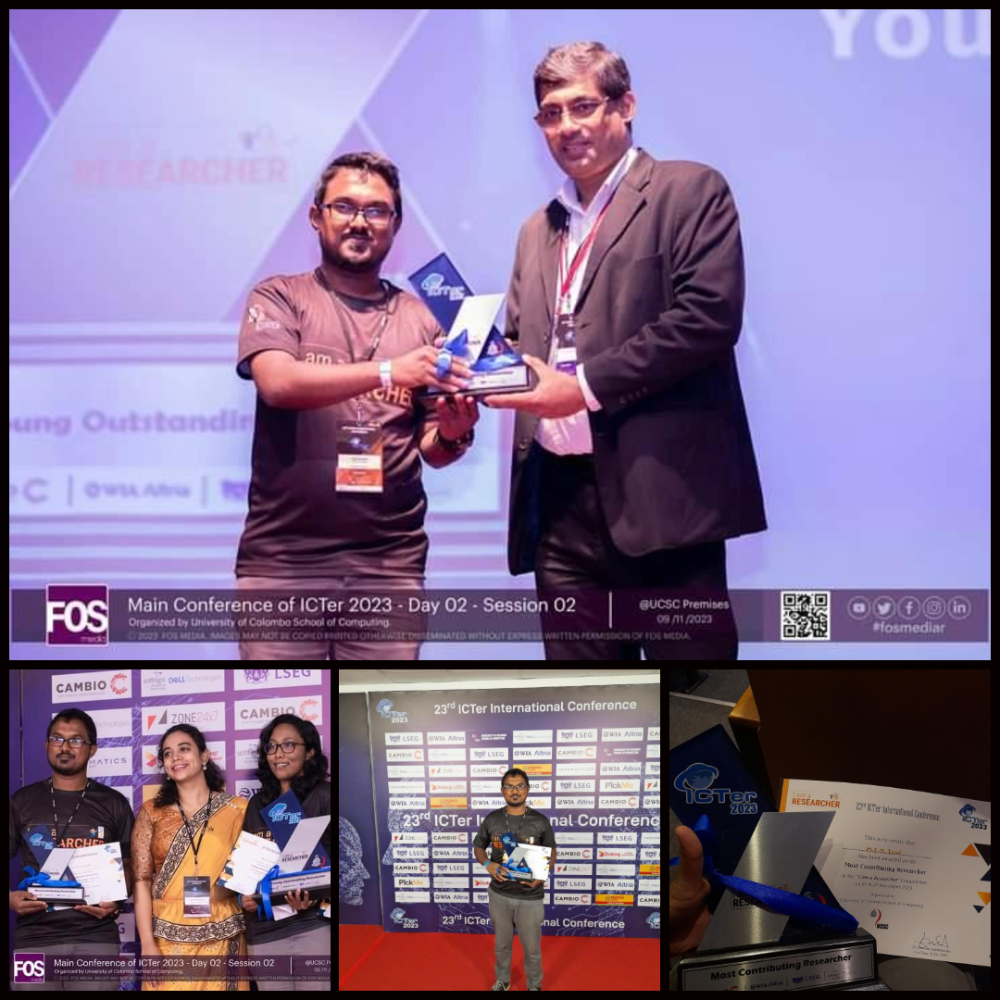
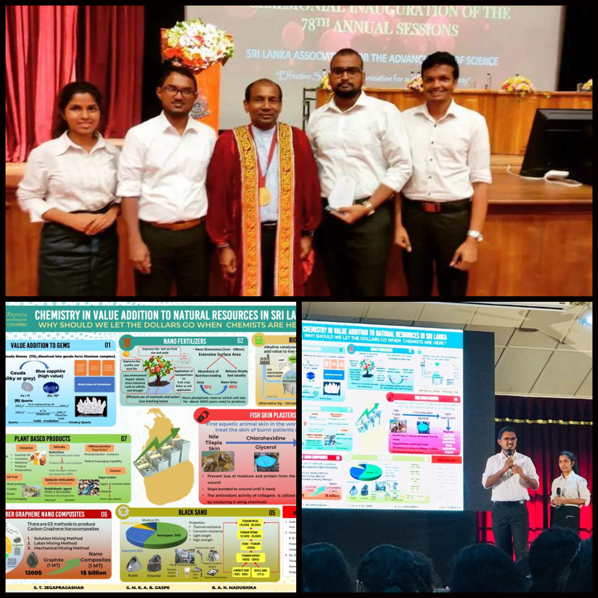
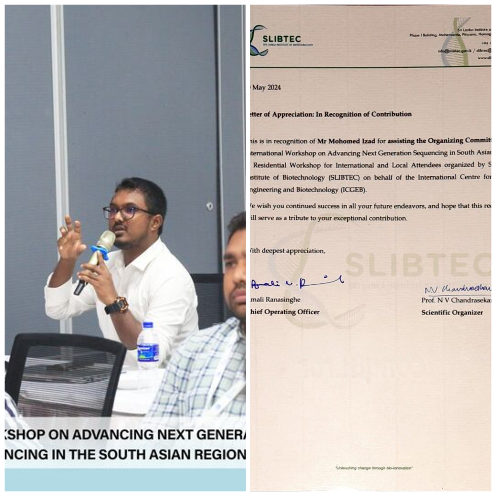
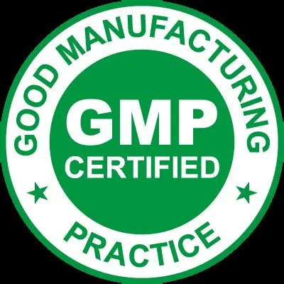
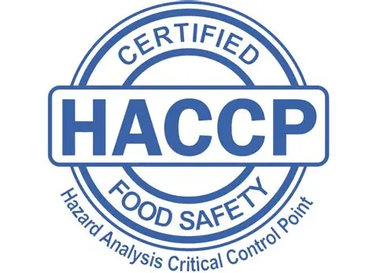

Mohamed Izad — Quality Analyst
BRIDGING
SCIENCE &
DIGITAL.
|
[ 01 — About ]
The Philosophy
In manufacturing, quality is binary. In the digital world, it's an experience.
I'm Mohamed Izad — a Quality Analyst at Hemas Manufacturing and a Molecular Biology & Biotechnology graduate from the University of Colombo. I bring the rigour of R&D to every digital challenge I tackle.
My expertise spans chemical and microbiological testing, data analysis (Power BI, Python, R), and quality systems development. Beyond the lab, I mentor teams, build workflows, and create content that bridges precision science with clear communication.
[ 02 — Journey ]
My Timeline
Quality Analyst
Hemas Manufacturing (PVT) LTD, Dankotuwa
- Lead chemical and microbiological testing to ensure compliance of imported and locally produced goods.
- Analyse FTQ/DPMO data, prepare reports and dashboards, and manage defect catalogues for suppliers.
- Develop and implement SOPs, ICQAs and quality systems for third-party manufacturing.
- Collaborate with R&D, production and procurement on new product development and cost optimisation.
Human Resources Manager (Part-Time)
IDER Solutions (PVT) LTD, Colombo
- Managed cross-functional teams focusing on operational efficiency, payroll and staff development.
- Overseeing stakeholder communication and supported project execution.
Research Intern
Sri Lanka Institute of Biotechnology, Pitipana
- Assisted in commercial cellulase enzyme production through cultivation of bacterial species.
- Ensured laboratory precision and implemented innovative solutions to enhance production efficiency.
Trainee Pharmacy Assistant
Cargills Ceylon PLC, Matara
- Provided customer service and assisted with pharmaceutical inventory management.
B.Sc. (Hons) Molecular Biology & Biotechnology
University of Colombo
- Focused on molecular biology, biotechnology and microbiology with a GPA of 3.00/4.00.
- Conducted research projects on cellulase-producing bacteria and Monascus fungal species.
G.C.E (Advanced Level)
St. Thomas' College, Matara
- Biology – B, Chemistry – B, Physics – A
- Z-score 1.7350
[ 03 — Skills ]
Technical Arsenal
Python & R
Data analysis, automation and statistical computing.
Web & Automation
HTML, CSS, JavaScript, Power Apps & Power Automate.
Molecular Techniques
DNA extraction, PCR, cloning, blotting & microbial assays.
Chemical Testing
pH, conductivity, viscosity, tensile strength & assay analyses.
Business Analytics
Power BI, Excel, SQL and dashboard creation for data-driven insights.
Leadership & HR
Team management, stakeholder communication & HR operations.
Critical Thinking
Innovation, problem-solving and process optimisation.
Lab Management
5S implementation, Kaizen practices and SOP development.
[ 04 — Projects ]
Selected Works (02)
Isolation, Characterization & Modification of Cellulase-Producing Bacteria
Investigating cellulase-producing bacterial species to enhance industrial enzyme production for biodegradable detergents. Collaborated with SLIBTEC to optimise cultivation and enzyme yields.
Isolation & Identification of Monascus Fungal Species
Explored traditional Sri Lankan rice varieties to isolate and identify Monascus fungi. Assessed pigmentation and metabolic profiles with potential applications in food biotechnology.
[ 05 — Recognition ]
Achievements

Most Contributing Researcher
Recognised at the ICTer Research Conference for outstanding contributions to research and innovation.

Best Presentation
Awarded by the Sri Lanka Association for the Advancement of Science for a presentation on value addition of natural resources.

ICGEB Organising Committee
Recognised by SLIBTEC for extraordinary commitment to conducting an international research conference on behalf of ICGEB.

Good Manufacturing Practices
Certification from the University of Sri Jayawardhanapura emphasising GMP principles and compliance.

HACCP Certified
Trained to analyse hazards and mitigate critical control points in manufacturing facilities. Certified by Halcyon Private Limited.

Power BI for Beginners
Course by Microsoft & Simplilearn exploring data visualisation and business intelligence.
Critical Thinking & Problem Solving
Course focused on honing critical thinking, analysis and innovative problem-solving skills.
Molecular Medicine (Biology)
Completed the Biology Molecular Medicine course with a distinction score of 92%.
Business Analytics with Excel
Certification from Simplilearn covering spreadsheet modelling and analytics fundamentals.
[ 06 — Contact ]
The Handshake.
Ready to elevate quality together? Reach out below.